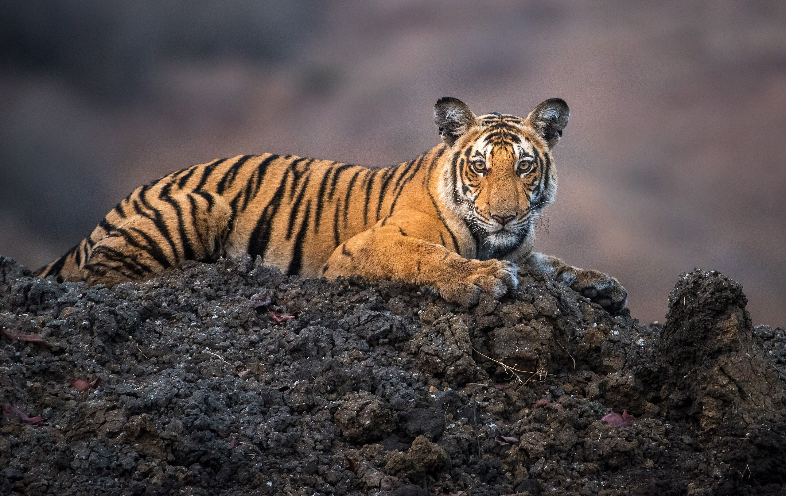

Obývají různé biotopy od tropických lesů přes stepi a mokřady až k severským tundrám. Původně areál rozšíření sahal od Kavkazu a východního Turecka do středoasijských stepí, od indického subkontinentu přes Zadní Indii a východní Čínu na ruský dálný východ. Areál také zahrnoval indonéské ostrovy Sumatra, Jáva a Bali. Dnes tygr obývá pouze malé zbytky původního areálu. Podle odhadů v současnosti žije v divočině 3 000 až 5 000 tygrů, většinou v národních parcích či rezervacích. Tygr je klasifikován IUCN jako ohrožený druh.
Ze současných kočkovitých šelem je největší a díky charakteristickým tmavým pruhům na zlatožluté či rudohnědé srsti nezaměnitelný. Někteří tygři běžně dosahují délky trupu přes 2 m, délka ocasu bývá až 90 cm a hmotnost samců mnohdy více než 200 kg; samice jsou výrazně menší, dosahují hmotnosti maximálně kolem 130 kg.